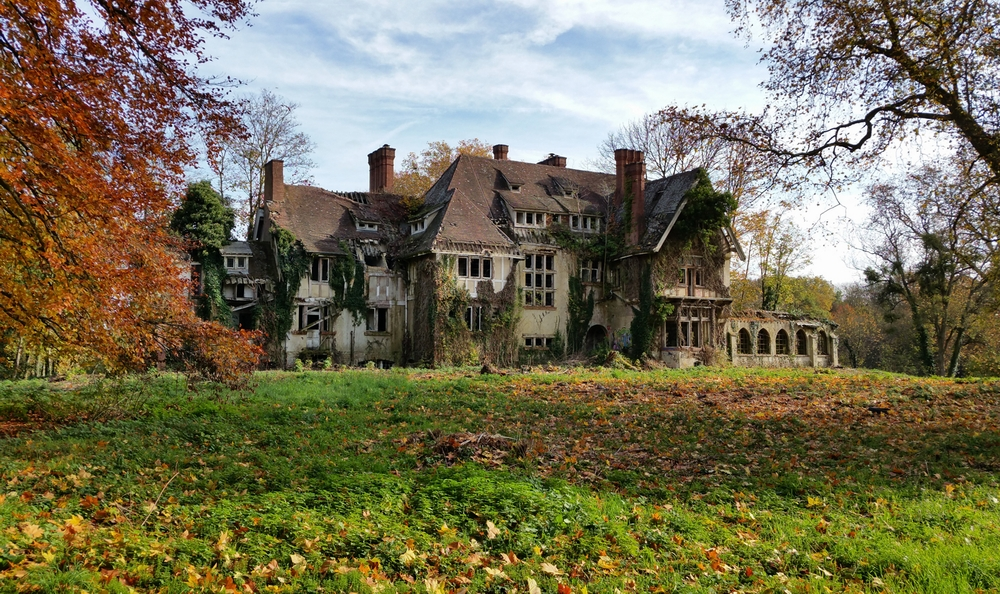

Bienvenue sur Glauque-Land ! Depuis 2001 le but de ce site est de vous faire partager ma passion pour des lieux particuliers : les endroits abandonnés. Au programme : manoirs, châteaux, forts militaires, carrières, hôpitaux, friches industrielles etc. Cette activité porte un nom : «urbex» («urban» + «exploration»). Visiter ces endroits est une pratique dangereuse (et illégale) que je ne vous recommande pas, et c’est pour cela que je ne donne pas les localisations de ces lieux. Je ne saurais être tenu responsable de vos actes dans le cas où vous décideriez de visiter à votre tour ce genre d'endroits. Cliquez sur l'image pour entrer, et bonne visite !
